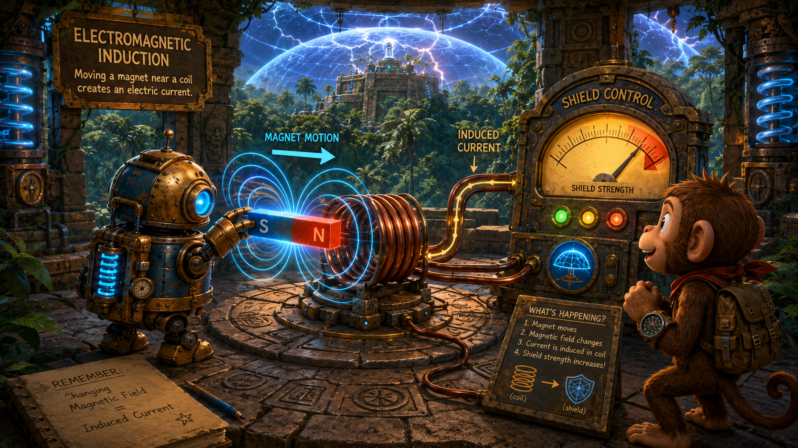
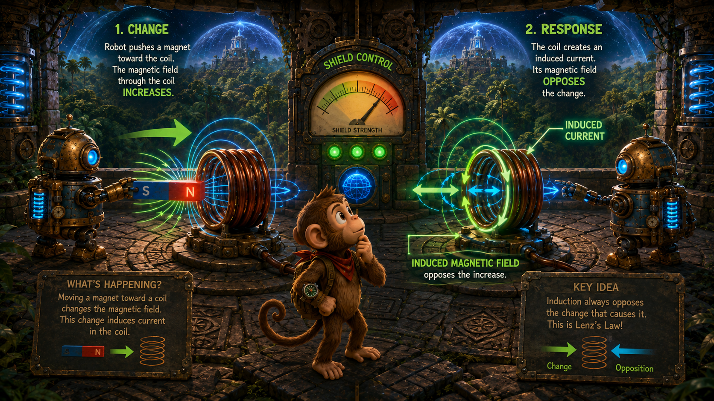
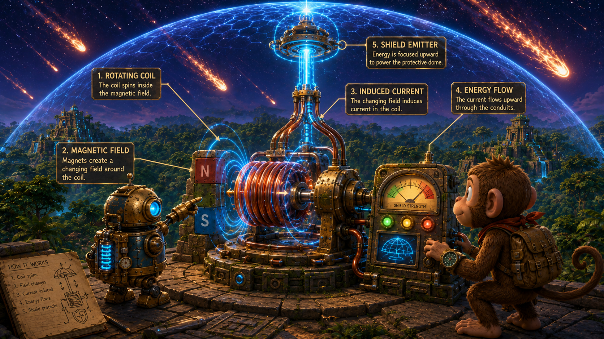

Field through an area
If many field lines pass through a loop, the magnetic flux is large. If few pass through, the flux is smaller.
Lesson 4 · Changing Fields
A meteor shower is approaching the jungle habitat, and the great energy shield above the canopy is flickering. Monkey and Robot must climb to the deep jungle pyramid, trace the magnetic circuits inside the shield generator, and restore power before the first meteors arrive.
Monkey and Robot arrive at the Swell Pyramid.
Magnetic flux is a way of describing how much magnetic field passes through an area such as a wire loop.
If many field lines pass through a loop, the magnetic flux is large. If few pass through, the flux is smaller.
A loop catches the most flux when it faces the field directly. If it is turned sideways, less flux passes through it.
A larger loop can intercept more magnetic field than a smaller one in the same field.
If a loop is turned so fewer field lines pass through it, what happens to the flux?
The magnetic flux decreases.
Monkey says, “So flux is like how much field fits through the hoop?” Robot replies, “Exactly. It tells us how much magnetic influence threads the loop.”
A changing magnetic flux through a conductor can create an induced voltage.
Moving a magnet, moving a coil, changing the field strength, or changing the loop's angle can all change magnetic flux.
When flux changes, a voltage is induced. If the circuit is complete, that voltage can drive a current.

Educational wide landscape illustration inside the upper chamber of the jungle pyramid. Robot moves a glowing bar magnet through a copper coil connected to a shield-control meter, while Monkey watches the meter jump. Through open stone windows at the top of the pyramid, the jungle canopy is visible below and the shield dome flickers above. Show field lines, arrows of motion, and induced current indicators. Painterly 3D adventure style, detailed but uncluttered, 16:9 landscape.
Does a steady magnet sitting still near a coil induce a continuous voltage?
No. A steady situation does not keep changing the flux. Induction requires change.
If the shield generator is not producing enough voltage, one possible cause is that the magnetic system is no longer changing strongly enough.
Michael Faraday showed that changing magnetism can create electricity. This discovery became one of the foundations of modern power systems.
Induction is used in generators, transformers, guitar pickups, induction cooktops, wireless charging, and many sensing systems.
Faraday's law tells us that the induced voltage depends on how quickly magnetic flux changes.
The faster the flux changes, the larger the induced voltage.
A coil with more turns experiences more total linked flux change and can produce a larger induced voltage.
A greater change in field strength generally means a greater induced voltage.
How can Monkey increase the induced voltage without changing the meter?
Move the magnet faster, use a stronger change in field, or use a coil with more turns.
Monkey says, “A lazy change makes a lazy voltage.” Robot replies, “Yes. Bigger, faster flux changes create a stronger response.”
The induced current acts in a direction that opposes the change that produced it.
Induction does not simply “help” the change. The system responds in a way that resists the change in flux.
Lenz's law protects energy conservation and helps explain why generators require mechanical effort.

Split-scene educational illustration inside the pyramid shield chamber. In one half, Robot pushes a magnet toward a loop; in the other half, glowing arrows show the induced current creating a field that opposes the incoming change. Monkey compares the two sides while looking up at the shield controls. Jungle canopy visible through the upper opening, carved stone machinery, luminous green and blue energy, clean educational arrows, 16:9 landscape.
Why does turning a generator feel harder when it is under electrical load?
Because the induced current creates an opposing effect. More electrical output means more opposition, so more mechanical work is needed.
If the shield field becomes unstable, checking the direction of induced current and coil wiring can reveal whether the system is opposing the right change or the wrong one.
A generator converts mechanical motion into electrical energy by induction.
A coil rotates in a magnetic field, or a magnet rotates near a coil, causing the magnetic flux to change continuously.
Many simple generators naturally produce alternating current because the direction of the induced voltage reverses during rotation.
Wind, water, steam, engines, and hand cranks can provide the motion needed to drive a generator.

Wide landscape illustration of Monkey and Robot troubleshooting a rotating generator at the very top of a jungle pyramid. The open canopy is visible all around. A rotating coil and magnetic assembly feed a glowing shield emitter above. Robot points to the rotating mechanism while Monkey checks a meter panel. Meteors streak across the sky beyond the shield. Painterly 3D science-adventure style, cinematic urgency, no title, 16:9 landscape.
What energy conversion takes place in a generator?
Mechanical energy is converted into electrical energy.
Monkey says, “The machine spins, and the shield wakes up.” Robot answers, “Because rotation changes flux, and flux change induces voltage.”
Transformers use changing current in one coil to induce voltage in another.
Alternating current in the primary coil creates a changing magnetic field.
That changing field passes through the core and induces voltage in the secondary coil.
More turns on the secondary than the primary gives a step-up transformer. Fewer turns gives a step-down transformer.
Why do transformers require changing current rather than steady DC?
Because the transfer depends on a changing magnetic field. A steady DC current does not keep changing the flux in the secondary coil.
If the pyramid's shield emitter needs a higher voltage than the generator directly produces, a transformer may be part of the power path.
Monkey and Robot inspect the shield system like technicians: tracing source, change, transfer, load, and output.
Dramatic educational illustration at the pyramid summit. Monkey and Robot complete repairs as the shield generator comes back online. Bright energy arcs flow through coils and into a transparent protective dome over the jungle habitat. Meteors strike the shield harmlessly in the sky. The canopy is clearly visible below the top platform. Show meters recovering, the shield glowing steadily, and a triumphant science-adventure mood. Painterly 3D style, no watermark, 16:9 landscape.
If the rotor slows down, what likely happens to generator output?
The flux changes more slowly, so the induced voltage usually decreases.
If the coil is open, can the shield receive normal current?
No. An open circuit interrupts the path, so normal current cannot flow.
Troubleshooting usually begins with simple observations: look for motion, check continuity, verify voltage, and follow the energy path step by step.
Good troubleshooting is not guessing. It is a sequence of checks that narrows the problem by evidence.
The main ideas to carry forward into later lessons.
Complete the sentence: changing magnetic flux induces ______.
Voltage.
What two big devices in this lesson depend on electromagnetic induction?
Generators and transformers.